本说明以业务员视角下的 A 项目为主线，展示合同、送货单、网价、对账单、发票和回款如何转成可核查、可计算、可追溯的业务结果。
交付包中的凭证为脱敏重制的合成演示件；A 项目展示的是可运行的数据变化与规则计算链路，不是真实客户或真实交易。
建议先看第四章的业务员 A 项目操作链，再看第六章的价值测算。经理、总经理和财务视角用于补充说明作品覆盖面；第八章介绍技术与安全边界。
阅读须知：链路、资料和项目性质
一、系统默认预置 10 个项目（A/B/D/E/F/G/H/J/K/L）；C 项目导入后共 11 个。数据性质分三类，请不要混为一谈。
① A 项目 —— 主演示链路。资料目录变化可触发解析、台账和下游经营结果更新，流程可现场复核；交付凭证均为脱敏重制的合成演示件（标注"示例 · 演示用 · 非真实票据"），企业、金额和票据内容不代表真实客户或交易。可运行的是数据处理链路，不是真实业务原件。
② C 项目 —— 新项目接入演示。C 不预置在系统中，资料包位于交付目录的 新增项目C-演示资料；现场导入后可观察体检、解析、注册和计算，资料同为演示数据。
③ B / D / E / F / G / H / J / K / L —— 虚拟项目。仅用于多项目组合和管理视角展示，不代表真实客户、债务或交易；J/L 逾期余额为情景参数。
账号与数字：系统有 5 个演示角色，不代表实际用户数；默认 10 个项目，导入 C 后 11 个。文中数字按"实测、系统卡片、假设"区分，组合价值测算含虚拟项目和外推假设，不是已实现收益。
模型与资料：OCR、计算和本地取证在本机执行；启用云端模型时，问题及用于回答的资料片段可能发送给对应服务商。请勿将真实敏感资料接入未获授权的云端服务。本交付包使用演示资料。
核心主张财务场景里，金额绝不允许模型算
我们把 AI 用在自然语言理解、检索辅助与文字组织上；金额、日期、费用等数字由可复算的本地规则产生，并为结果提供可查看的证据来源，让评委能在现场复核。
第三章说明模型、规则和人工确认的分工；第五章展示业务数字如何从原始资料推导并被下游复用。
绿金街从事供应链贸易业务——向上游采购钢材，向下游供货，提供采购、履约、结算一体化的供应链服务。这类业务有三个天然特征：链条长、环节多、单据多。
一笔业务从签订合同开始，要经过发货、过磅、对账、开票、回款多个环节。每个环节都会产生纸质凭证：送货单由过磅房现场出具，网价是纸质通知或截图，对账单、发票、回款回单各自归档。这些资料分散在多个文件夹里，格式还不统一。
过去这条链条上的每一个环节，都依赖人工打开文件、抄录数字、手工比对、手工做表。系统要解决的，正是"资料与核算规则高度依赖个人"这个问题——人一换，口径就变；人一忙，异常就漏。
| 岗位痛点 | 过去怎么做 | 系统怎么解决 |
|---|---|---|
| 资料缺失、金额对不上，很难及时发现 | 人工逐份打开文件、手工登记日期与金额，再把不同单据放在一起检查是否矛盾 | 单据完整性核查：自动全量交叉核验，缺件与金额差异自动标记，并一键翻回原件 |
| 纸质单据上的字，系统读不到、算不了 | 一张张看、一笔笔抄进 Excel，再手工套合同下浮规则换算单价金额 | 业务台账：送货单与网价两类凭证经 OCR 识别，按合同规则自动算价，生成逐笔台账 |
| 经营数据靠人工录、人工算、口径还不一致 | 反复制作多张表，应收、逾期、毛利、税费各算一遍，两个部门两个数 | 经营数据统计：以台账为唯一数据源，自动归集核算，看板随数据同步刷新 |
| 结算周期、起息日、抵扣顺序易算错 | 人工查合同条款、整理回款、手工逐笔分段计算本金天数费用 | 资金占用费核算：按合同约定规则自动抵扣、分段计息，输出可追溯明细 |
| 容易错过节点，漏催或误催 | 靠人定期翻文件判断是否逾期，发现问题再手工整理催款依据 | 逾期提醒：按账期规则自动分级预警，逾期自动生成催款函并推送经办人 |
一句话概括
这套系统做的是三件事：把纸质资料变成数据、把人工判断变成规则、把分散结果变成可追溯的证据链。
系统左侧是功能导航，右侧是工作区。八个模块按业务发生的先后顺序排列，前六个是"业务员日常工位"，后两个是"项目接入"与"管理者视角"。
| 序 | 模块 | 一句话定位 | 关键能力 |
|---|---|---|---|
| 1 | 项目资料 Agent | 项目资料的智能问答助手 | 自然语言提问 · 本地取证 · 答案带出处 |
| 2 | 业务台账 | 采购销售逐笔明细 | 双凭证 OCR · 合同规则算价 · 凭证可回溯 |
| 3 | 经营数据统计 | 结算、毛利、税费与回款总览 | 五项经营评分 · 多维周期切换 · 回款与费用确认单 |
| 4 | 单据完整性核查 | 台账生成前的质量控制闸门 | 两层核验 · 五项规则 · Agent 取证与证据链 |
| 5 | 资金占用费核算 | 月度确认单与回款日志 | 回单 OCR · 抵扣顺序 · 分段计息 · 封顶控制 |
| 6 | 逾期提醒 | 监控、催办与催款函 | 四档分级 · 状态机 · 催款函生成 · 飞书推送 |
| 7 | 新增项目 · 智能初始化 | 把项目接入简化成"整理一个文件夹" | 进件体检 · 独立数据空间 · 项目间数据隔离 |
| 8 | 业务部经理工作台 | 面向管理者的决策视图 | 团队态势 · 事项分派 · 汇报稿自动生成 |
另有一个集团经营驾驶舱（管理者视角，含全集团指标、项目排名、逾期风险 Top3 与应用使用情况），见第七章。
两条业务主线（界面上用蓝色/橙色标签条标注）
主线 01 · 从原始资料到经营数据：项目文件夹 → 合同送货单与网价识别 → OCR 结构化 → 合同规则算价 → 自动生成业务台账 → 经营数据看板。
主线 02 · 从业务数据到风险决策：台账 + 合同 + 回款单 → 付款条件判断 → 应收与逾期计算 → 资金占用费核算 → 催款函生成 → 负责人审批。
每条模块页顶部都会显示自己属于哪条主线，观众一眼就能定位它在整条链条上的位置。
这一章说明模型和本地程序各自负责什么，以及金额与业务结论如何保持可核验。
这套系统不是所有模块都交给大模型。问答、核查结论和经营小结在需要语义理解或文字组织时使用模型；台账、经营统计、资金占用费和逾期金额以本地解析与确定性规则为主。
| 环节 | AI 干什么 | 程序干什么 | 可当场验证的地方 |
|---|---|---|---|
| ① 单据核查 多轮取证 |
模型可用时辅助规划取证与组织异常结论 | 文件名初筛、OCR 取数、五条规则比对、差异金额计算 | 核查结果展示差异字段、关联日期和原件入口 |
| ② 台账算价 规则驱动 |
不参与计算；仅在人工校正字段时辅助解释异常 | 网价 + 合同下浮 → 两端含税单价 → 金额、毛利 | 每一行都能翻回送货单与网价原件 |
| ③ 经营小结 确定性评分 + 模型措辞 |
把五项评分结果组织成通顺的经营结论与行动建议 | 五项经营评分、所有金额、同比环比全部由规则算出 | 小结顶部标签明写"确定性评分 + 模型措辞" |
| ④ 资金占用费 纯规则引擎 |
不参与。这一环节刻意不用模型 | 回单 OCR、抵扣顺序、分段计息、回款日不计息、封顶 | 每段起止日、本金、天数、费用逐行可查 |
| ⑤ 逾期风控 规则定档 + 模型表达 |
生成催款话术、建议动作、风险表达 | 起息日、逾期天数、四档分级、催款函事实填充 | 页面底部写明"金额、天数、账期由规则引擎确定性计算" |
| ⑥ 项目问答 模型规划 + 本地取证 |
理解问题、拆查询计划、组织答案措辞 | 本地取证、合同条款检索、规则计算与反查校验 | 每条答案下挂来源标签（如"合同 §6.1、§7.2.1"） |
设计原则模型理解与表达，程序取证与计算，人负责确认
模块并非都由大模型驱动。将语义任务交给模型、将财务计算交给确定性规则、将对外处置留给人，便于现场验证每类能力的边界。
架构约束金额、日期、份数、天数和费用由本地程序计算；模型辅助理解问题、检索取证与组织文字，不作为财务计算器。
用一句大白话打比方：这台系统更像一家医院。仪器（本地程序）负责量血压、验血、出数字；医生（大模型）负责看指标、下判断；病人（业务人员）决定采不采纳。关键规矩是：仪器绝不允许"猜"数字。
| 谁 | 负责什么 | 为什么由它负责 |
|---|---|---|
| 本地程序 （确定性计算） | 金额、重量、日期、天数、资金占用费、税率、缺件数、文件出处、页码 | 算得准、算得快、结果可复现，可以拿去做审计底稿。 |
| 大模型 （语义辅助） | 理解自然语言问题、辅助检索取证、组织答案与汇报文字 | 适合处理自然语言与表达任务；不负责金额、日期或费用计算。 云端或本机模型不可用时，相关功能会降级到本地规则/检索能力。 |
| 业务人员 （最终决策） | 审核核算结果、确认资金占用费、审批催款函、处置待办事项 | 系统给依据和草稿，对外动作必须经人确认。 |
核心机制计算结果与证据分开验证
金额由规则计算；评委可从差异或结论打开原件，核对字段与合同依据。模型措辞不替代业务核验和人工判断。
所以在单据核查页上，你会看到两种标签：大模型已参与 和 本地规则引擎已接管。它不是"调了个接口就完事"，而是有一套谁说了算的秩序。
亮点不只是"算出来的数"能翻回原件，连算价和计息所依据的那份合同，本身也能翻回原件——证据链到合同这一层才算闭合。
第二个比方：这套系统的输出像一份法庭卷宗。给出结论只是第一步，结论下面必须压着证据，证据必须能翻到原件。
这在页面上是四件事，可以在截图里逐一验证：
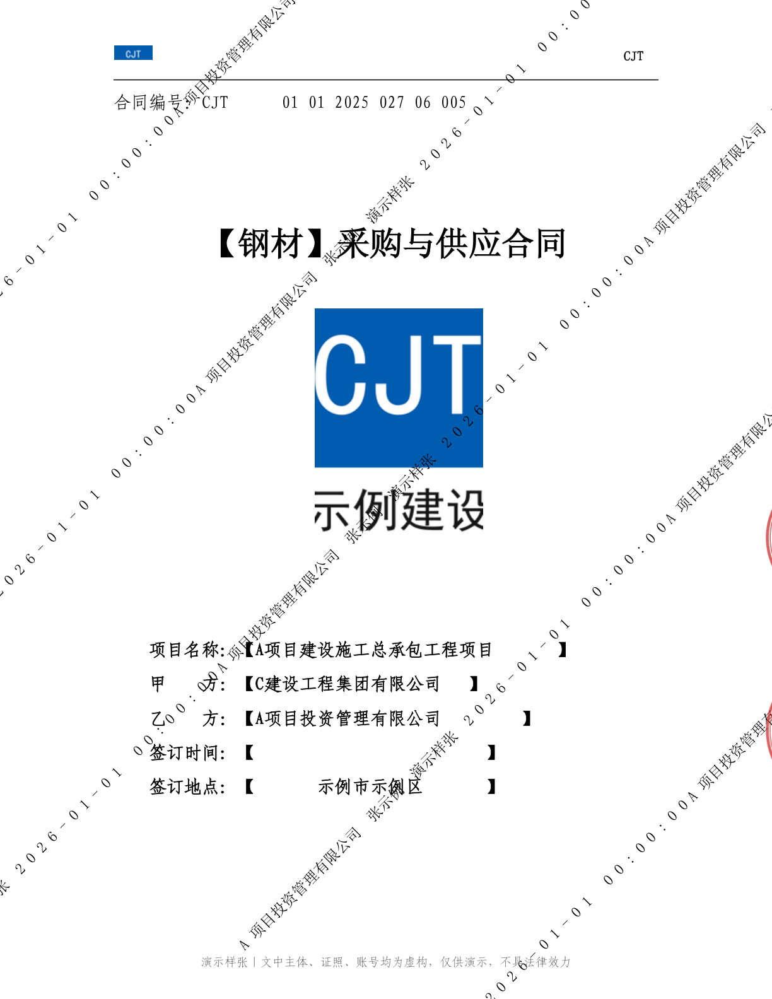
为什么这条原则对国企特别重要
国企的单据有"双归档"要求：纸质原件用于现场签章、审计和责任追溯（法律效力），线上影像与结构化字段用于检索、核验和流程留痕（效率）。这两套资料过去常常各归各的。
系统把两套资料绑定到同一笔订单：线上算出来的每一个数，都能一键翻回被扫描的那张纸。效率提升不以牺牲"能查证"为代价。
亮点能不叫模型就不叫模型：规则能判的毫秒级出结果；规则判不了的才叫模型。模型不可用时自动退回规则引擎并在页面标注——功能不中断，且口径全程透明。
第三个比方：像车上备了备胎。路好走就正常开；路况不好，也有备用方案，不会半路抛锚。
| 场景 | 系统的处理办法 | 结果 |
|---|---|---|
| 文件名一看就知道缺件 | 第一层正则初筛直接判定，不打开文件、不调模型 | 毫秒级出结果 |
| 扫描件读不出金额 | 三级降级：PDF 文本层 → 全文抽取 → 逐页 OCR | 扫描件也不漏检 |
| 模型不可用或超时 | 自动退回本地规则引擎，并在页面标注"本地规则引擎已接管" | 功能不中断 |
| 模型结论里的数字查不到出处 | 判定无效，退回规则判定 | 不产生"没根据的结论" |
这条原则直接决定了系统能不能"稳"
日常使用中最怕的不是功能少，而是点了没反应、转圈转到超时。确定性优先的设计，让系统在断网、模型限流、扫描件质量差这些意外情况下，仍然能给出一个"有依据的结论"，而不是一片空白。把"这次是谁判的"直接显示在页面上——看结果的人知道这条结论是模型定的还是规则定的，可以据此决定要不要重点复核。
以下每张截图都来自系统实际运行画面（主演示资料库：A 项目），图上的数字就是系统当时算出来的数字，可逐项复核。八个模块统一按「解决什么 → 实测跑出什么」来写，不再铺陈页面字段清单——那些留给你在现场点开看。
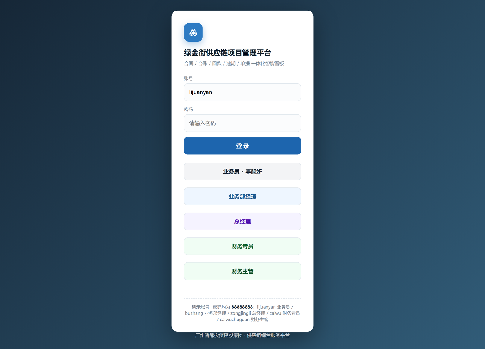
| 角色（部门） | 能看到什么 |
|---|---|
| 业务员 采购业务部 | 自己负责的项目（A、B），六个业务工位 |
| 业务部经理 采购业务部 | 全部十个预置项目 + 管理导航（团队态势、项目组合、决策事项、领导汇报）+ 集团经营驾驶舱 |
| 总经理 集团管理层 | 集团经营驾驶舱、经理汇总视图与应用使用统计——看全局，不做具体项目操作 |
| 财务专员 / 财务主管 财务部 | 财务视角：回款回单上传与 OCR 识别、回款上报、资金占用费重算——专员上报，主管确认，两道签核 |
顶栏有当前项目下拉框（切项目即切全部数据）、「＋ 新增项目」，以及 业务部经理视角重新读取项目文件夹切换模块。状态标签显示「演示模式」，明示资料来自演示库。
建议的跑通顺序——先验资料，再算钱：
为什么单据核查排最前？因为后面所有环节都建立在"单据是齐的、金额是对的"这个前提上。闸门不严，后面全是错的。
亮点把原件、影像、结构化字段三样东西交叉核验——金额冲突不是人看出来的，是系统比对算出来的；异常一键翻回原件。
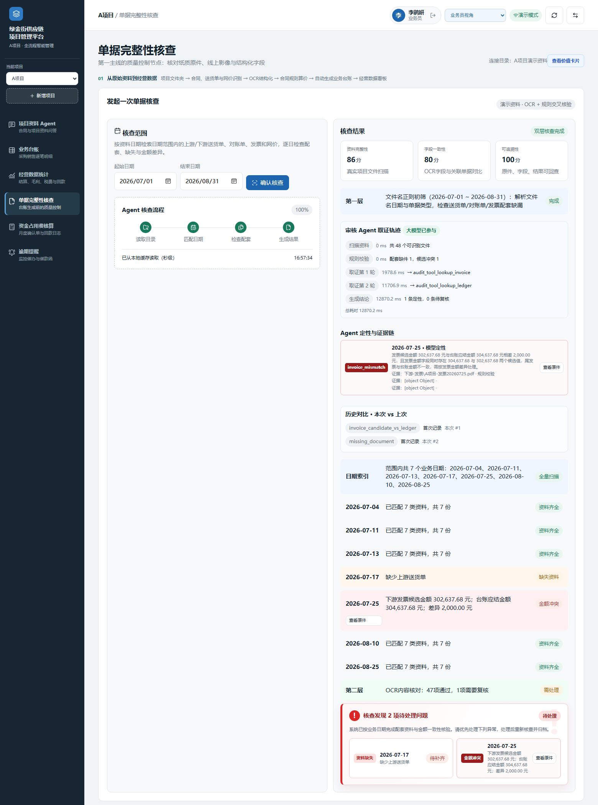
它核对的不是一份文件，而是纸质原件、线上影像、系统读出的结构化字段三者对不对得上。日期范围可任意指定（单日/单周/单月/跨年），分组依据是文件名上的业务日期而非电脑修改时间——历史资料直接能核。
核心机制那 2,000 元是怎么发现的
系统不是只读一张票，而是把发票、对账单、台账三个来源摆在一起比对——交叉核验。单看一张发票票面自洽，看不出问题；只有多源并排，差异才暴露。
用留档票面验证：这张发票明细逐行相加，合计栏 ¥304,637.68，但下方"价税合计（小写）"写的是 ¥302,637.68——同一张票两个汇总数自差 2,000 元。系统保留票面全部候选值逐一比对，所以抓得到"票面被改写"，而不只是"数字读不出来"。
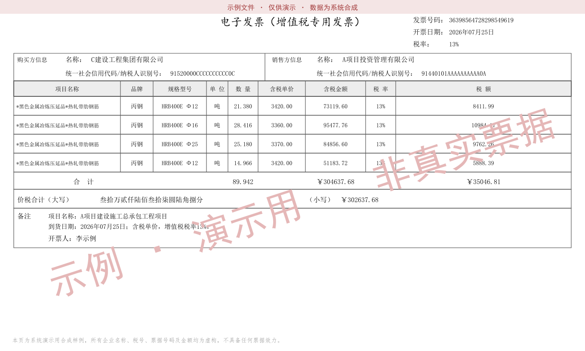
两层核验的分工：第一层只看文件名，几毫秒判断"这天该有的单据齐不齐"——便宜的事先做；第二层才真的打开文件读金额，顺序是三级降级 PDF 文本层 → 全文抽取 → 逐页 OCR——贵的事只对必要内容做。最后五条规则交叉验证，同一原件命中多条自动去重。
核心机制"取证轨迹"最能说明本系统与"简单调接口"的区别
发现 7 月 25 日发票有问题后，系统没有直接下结论，而是自己决定"下一步该查什么"：
扫描资料 0 ms · 48 个业务文件 → 规则校验 0 ms · 缺件 1，候选冲突 1 → 取证第 1 轮 8,239 ms · 查台账 → 取证第 2 轮 9,975.8 ms · 查发票原件 → 生成结论 1 条定性、0 条待复核
亮点这是全系统唯一的人工原始数据入口，也是所有数字的源头。台账上每个金额都不是人抄的，是按合同规则从一手字段算出来的。
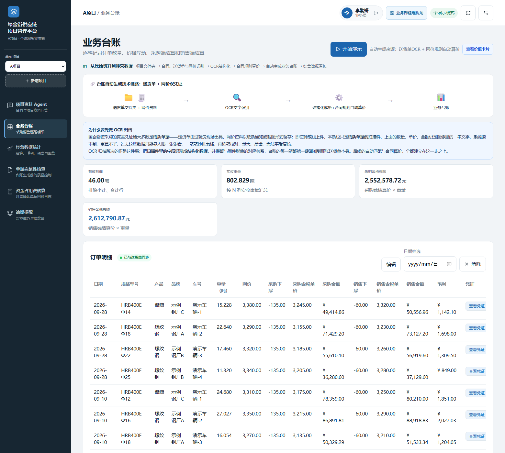
系统把纸质单据上的日期、规格、品牌、车号、重量、网价读出来，按合同规则算出两端含税单价与金额，生成逐笔可核对的明细表。页面有一段"为什么要先做 OCR 归档"的说明，讲的是业务现实：即使转成线上件，本质也只是扫描件，上面的数字仍是图像里的一串文字，系统读不到、更算不了。
亮点「查看凭证」＝ 凭证可回溯的落地形式
点任意一行最右侧的「查看凭证」，弹出窗口左右并排显示送货单原件和网价原件两个 PDF。评委或审计问"这个数字从哪来的"，答案不是一句"系统算的"，而是可以当场打开原件给你看。能点开原件给审计看的数字，才叫数据。
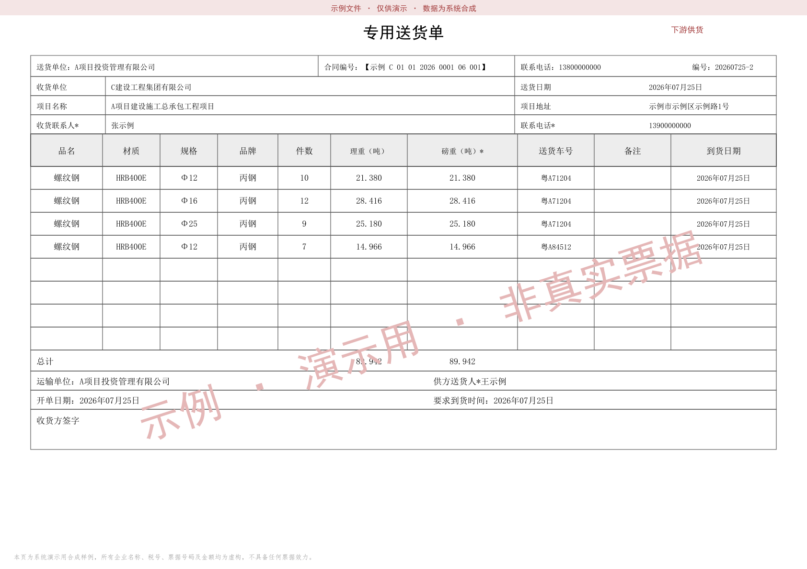
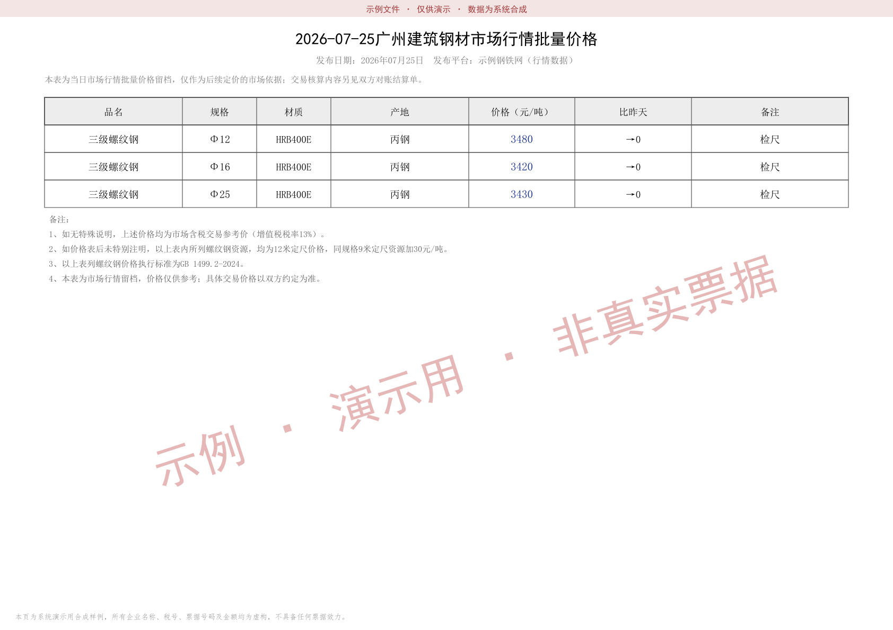
亮点整页指标、图表、结算周期、确认单全部由同一份台账派生；页面还把每个指标的计算公式直接摊开——口径透明，是"敢被核对"的前提。
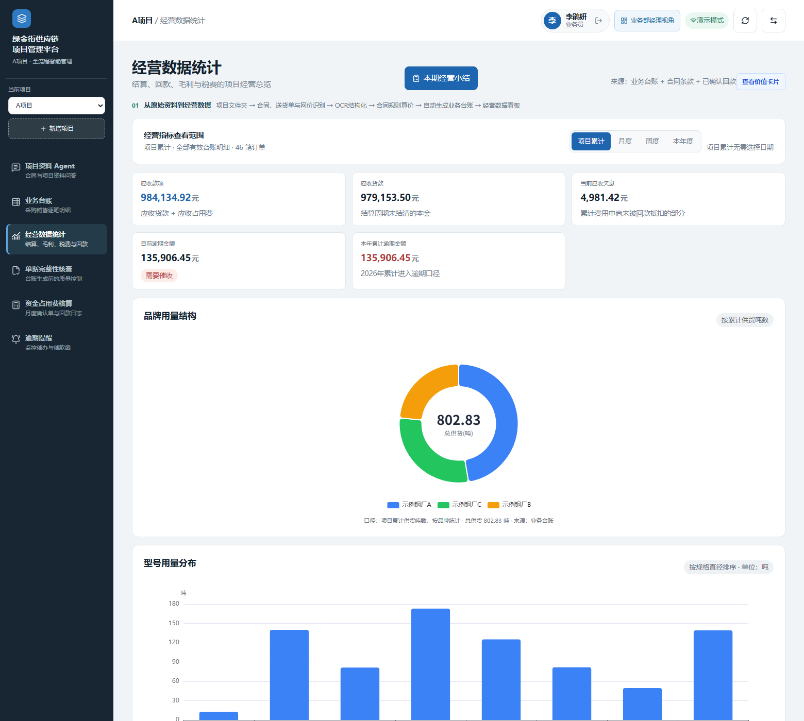
数据只有一个来源——业务台账，因此不存在"两个部门两个数"。查看范围四档：项目累计 / 月度 / 周度 / 本年度，切换后整页自动重算。
页面底部把口径摊开：毛利 = 销售价 − 采购价；增值税 = (销售价 − 采购价) × 13%；附加税 = 增值税额 × 13%；印花税 = (采购价 + 销售价) ÷ 1.13 × 0.03%。每个指标下方还写明来源列（如"来源：业务台账 AC 列"）。
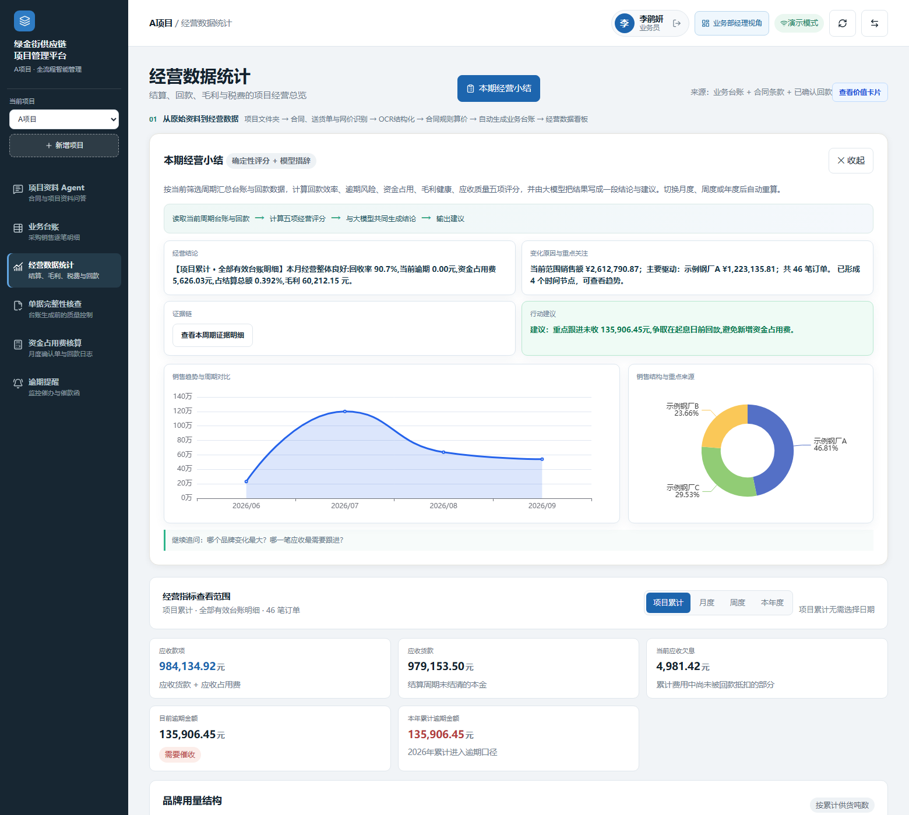
最硬的一处全篇最难、也最能体现"规则引擎"价值的一页：回款回单靠 OCR 自动读取，抵扣顺序、分段计息、不计息日、封顶全部由程序固定执行——过去最容易算错、也最难复核的一段，现在逐段可查、可复算。
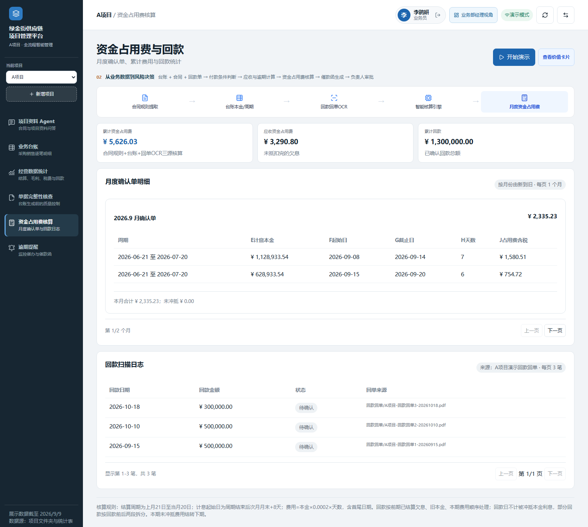
2026.9 月确认单（¥2,335.23）拆成两段分段计息：
| 周期 | 计息本金 | 起算日 | 截止日 | 天数 | 占用费（含税） |
|---|---|---|---|---|---|
| 2026-06-21 至 2026-07-20 | ¥1,128,933.54 | 2026-09-08 | 2026-09-14 | 7 | ¥1,580.51 |
| 2026-06-21 至 2026-07-20 | ¥628,933.54 | 2026-09-15 | 2026-09-20 | 6 | ¥754.72 |
同一周期拆两段，是因为中间发生了一次部分回款——系统按"回款前 / 回款后"两个不重叠区间分别计息。
结算周期固定为上月 21 日至当月 20 日；计息起始日为周期结束后次月月末 + 8 天。不是人工填的，是规则算的。
回款按固定顺序冲抵：前期已结算欠息 → 旧本金 → 本期费用。顺序错了整期都不准，所以由规则固定。
费用 = 本金 × 费率 × 天数（含首尾）。回款日不计被冲抵本金的利息；部分回款按前后拆成两个不重叠区间。
本期未冲抵完的费用结转到下期；同时执行合同约定的封顶控制，避免费用无限累积。
对外表述口径（重要）
页面所载"费率、天数、抵扣顺序"为系统实现细节的逐字引用，仅供技术核对与答辩使用。对外演示、汇报与宣传材料，涉及结算与计费的一律统一表述为："按合同约定的结算与计费规则，自动核算"，不展开费率与资金占用结构。
亮点未逾期就不动作——系统在"条件判断"这一步主动停下，只有真实逾期才推进。既避免"漏催"，也避免"误催"。
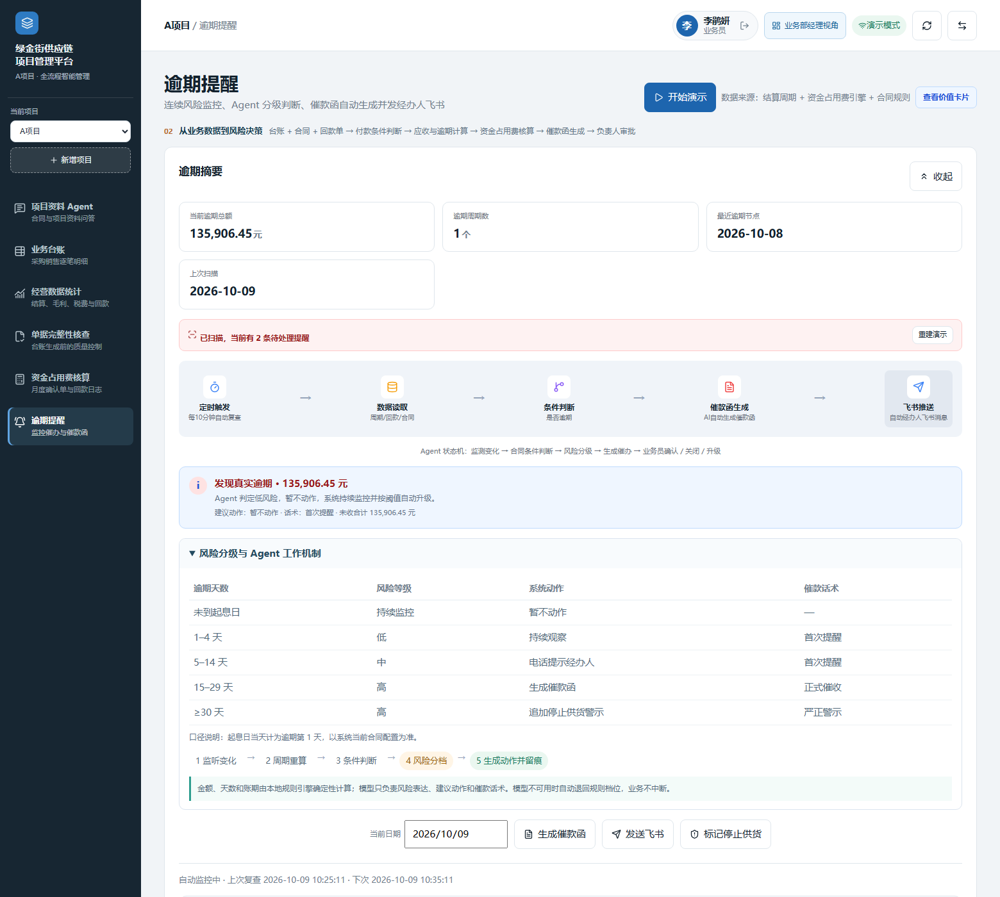
五步自动流程：定时触发（每 10 分钟复查）→ 数据读取 → 条件判断 → 催款函生成 → 飞书推送。Agent 状态机：监测变化 → 合同条件判断 → 风险分级 → 生成催办 → 业务员确认/关闭/升级。
跨项目一致切到任意项目，逾期面板与经营看板逐项对得上。十项目组合逾期 ¥4,526,906.45，其中 A/B/E/J/L 分别为 ¥135,906.45 / ¥1,500,000 / ¥620,000 / ¥1,136,000 / ¥1,135,000；J、L 为虚拟演示参数，其他五个新增项目逾期为 0。同时催办记录按项目隔离，不会拿别的项目数字来充数。
| 逾期天数 | 风险等级 | 系统动作 | 催款话术 |
|---|---|---|---|
| 未到起息日 | 持续监控 | 暂不动作 | — |
| 1–4 天 | 低 | 持续观察 | 首次提醒 |
| 5–14 天 | 中 | 电话提示经办人 | 首次提醒 |
| 15–29 天 | 高 | 生成催款函 | 正式催收 |
| ≥30 天 | 高 | 追加停止供货警示 | 严正警示 |
起息日当天计为逾期第 1 天，以系统当前合同配置为准。
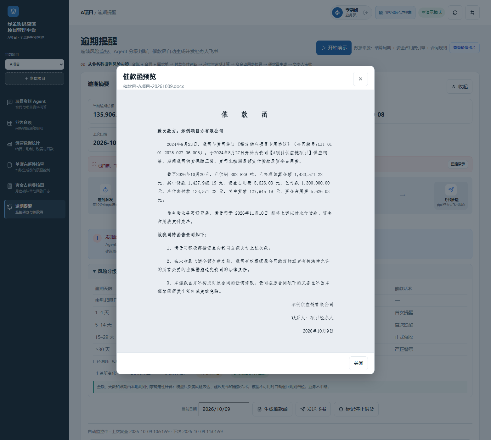
亮点问一句人话，系统自己去查资料、自己定位合同条款、自己算，再把答案和出处一起给你。要害在分工：取证、计算、校验全在本地；模型只负责理解问题和组织语言。
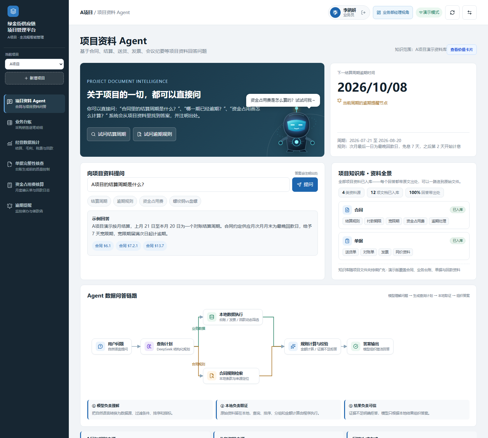
关键分工：问题理解与查询计划由模型完成；取证、计算、校验全在本地；最后才由模型把已核验的结果组织成通顺回答。知识库右上角三个统计：4 类资料源、12 项文档已入库、100% 回答带出处。证据不足时，系统明确指出缺少哪些资料，而不是猜测。
回答一个问题：这套系统换一个项目，还要重新开发吗？答案是不用——把项目资料整理成一个文件夹，导入即可。三步：填项目名称 → 选资料文件夹 → 自动进件体检并建立独立数据空间。
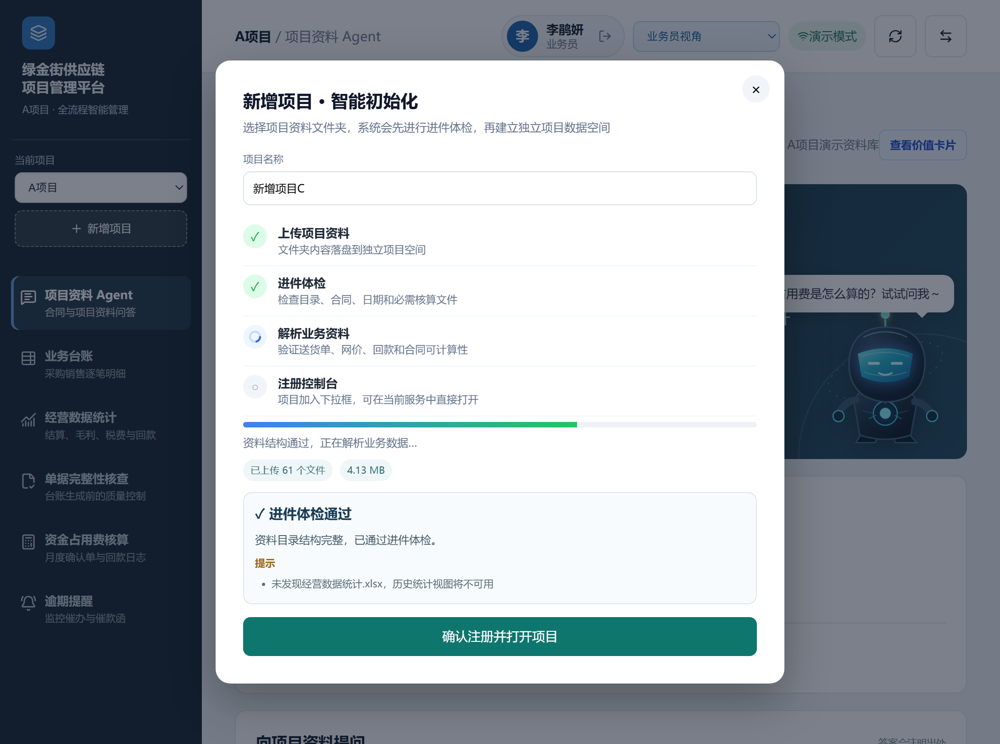
两个必须点出的设计：① 进件体检——不是直接把文件丢进去，而是先核验完整性、缺件当场提示，与"单据完整性核查"是同一套质量理念，只是提前到项目接入的第一道关；② 独立数据空间——项目之间数据隔离，新增项目不污染既有数据。
演示设计系统预置 10 个项目（A/B/D/E/F/G/H/J/K/L）常驻下拉框，C 项目刻意不预置——它的资料包单独放在交付目录的 新增项目C-演示资料 里，专门留作现场演示"新增"这一步。评委现场导入这 61 个文件，系统自己解析、建库并生成结算结果；演示完点"注销"即可回到初始状态。导入后系统总数为 11 个项目。
经理视角汇总跨项目风险与待决策事项，并把跟进进度整理成向上汇报摘要；业务员的 A 项目操作链仍是本作品的主展示内容。
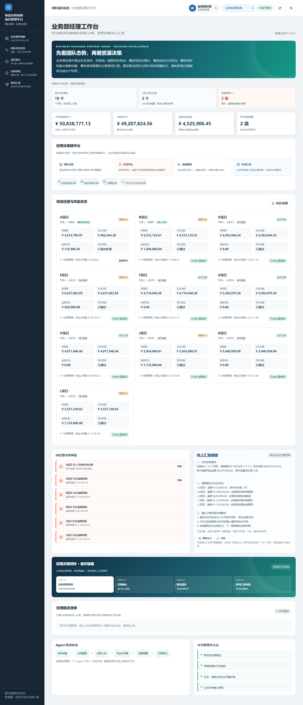
展示重点：经理查看全项目风险并形成跟进、汇报闭环；页面用于体现管理协作覆盖面，不把虚拟组合数字当作 A 项目的实绩。
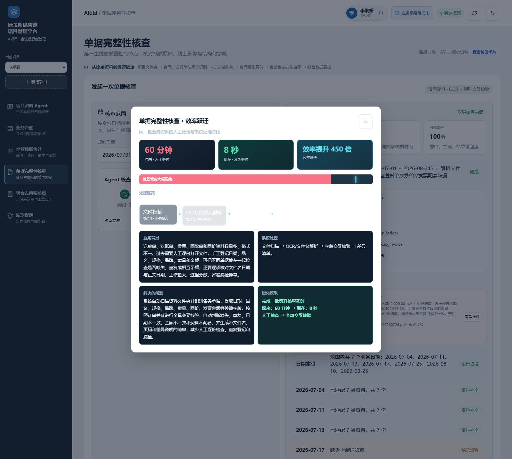
它解决一个很实际的观感问题：不熟悉 OCR 和规则引擎的读者也能看懂结论，熟悉技术的读者则能从"自动化链路"那一行看到实现路径——一张卡同时服务两类读者。而且卡片是"活的"：口径变了（如核查从抽查改为全量），"准确性"那句话也跟着改写。它不是静态宣传页，而是随系统一起维护的自证材料。六张卡片的完整对照见第六章 6.1。
这一章是全篇技术含量最高的一章，也是这套系统与"把表格搬到网页上"最本质的区别。一句话说完：系统只让人提供第一手事实，其余每一个数字都不是"录进去"的，而是"由公式规则引擎算出来、并被下一个环节接着用"的。
先把话说清楚：什么叫"一手数据"？
一手数据 = 只有源头才有的、无法再推导出来的事实。比如：送货单上的过磅重量、网价资料上的当日基准价、回款回单上的到账日期与金额、合同上约定的结算与计费规则。
除此之外的一切——含税单价、采购金额、销售金额、毛利、税费、结算周期、起息日、逾期天数、资金占用费、催款函上的欠款金额、经理台的项目汇总、向上汇报稿里的数字——全部是推导出来的，不是人填的。
这就是"最少的一手数据"的含义：人只负责提供事实，系统负责提供结论。人越少录入，口径就越唯一，出错的空间就越小。
下面这张图就是这套系统的"骨架"。看它的时候请注意一件事：每一层都只从上一层取数，从不跨层另找数据。这就是"一环扣一环"。
这张图最该被记住的一句话
从第一层到最后那一层，中间没有任何一步是"人工再录一遍"。改一个一手数据（比如把回款日期往前挪三天），整条链会自己重算一遍，一路改到催款函和汇报稿。数据只维护一次，全链路自动跟随。
以 A 项目当前演示数据中的一个数为例：逾期未收本金 ¥135,906.45。它在源头只被算出来一次，然后被下面这些地方各自取用，没有任何一处是人工重新填写的。
| 序 | 出现在哪 | 它被用来说明什么 | 怎么复用过来的 |
|---|---|---|---|
| 1 | 经营数据统计 · 逾期金额 | 当前逾期金额指标 | 源头：由规则引擎算出 |
| 2 | 经营数据统计 · 历史结算周期 | 该周期"当前逾期"状态那一行 | 同一份周期数据 |
| 3 | 逾期提醒 · 逾期摘要 | 当前逾期总额 | 取周期逾期余额 |
| 4 | 逾期提醒 · 动态风险卡 | "发现真实逾期"的依据 | 取周期逾期余额 |
| 5 | 逾期提醒 · 四档分级/时间线文案 | 说明这一档为什么触发 | 同一事实 + 天数规则 |
| 6 | 项目资料 Agent · 试问回答 | 解释逾期构成 | 本地取证后引用 |
| 7 | 经理工作台 · A项目卡片 | 该项目的逾期风险 | 项目维度汇总 |
上表只是"其中一个数字"的复用情况。同为源头派生值的 未收本金 979,153.50 元、应付未付 133,571.22 元、累计资金占用费 5,626.03 元、已供钢 802.829 吨，同样分别出现在结算、催款函正文、飞书卡片、汇报稿等多处。一处算，多处用。
为什么这件事值得单独写一节？
① 不会出现"两个部门两个数"。源头只有一个，所有报表都是它的下游，口径天然一致。
② 改一处，全链跟着改。回款日期、结算周期、合同下浮比例只要变，下游的成本、利润、税费、逾期、催款函、汇报稿全部自动重算，不需要有人记得"还有哪张表也要改"。
③ 每个派生值都能一路回溯到源头那张纸。因为它是算出来的，系统就知道它是拿哪几个字段、按哪条规则算的——这正是第三章"可追溯"能成立的技术前提。
"公式规则引擎"不是一句口号。它的实际形态是：把人脑里的换算习惯，写成一段一段可以被机器执行、也能被人逐条核对的确定性规则。下面这张表是系统里真实生效的规则清单（可直接对照原始合同核对）。
| 环节 | 系统实际执行的规则 | 这项规则解决了什么人工难题 |
|---|---|---|
| 台账算价 | 含税单价 = 网价基准 + 下浮额（采购端、销售端分别取合同约定的下浮）；金额 = 重量 × 含税单价；毛利 = 销售金额 − 采购金额。 | 过去要一张张翻送货单和网价，再手工套合同下浮换算两端单价。规则化之后，上下浮动一个点，全月几十笔单价金额同时跟着变。 |
| 税费计提 | 增值税 = (销售价 − 采购价) × 13%；附加税 = 增值税额 × 13%；印花税 = (采购价 + 销售价) ÷ 1.13 × 0.03%。 | 税费最容易"各算各的"。公式写死之后，采购价或销售价一变，三税同时重算。 |
| 结算周期 | 固定为上月 21 日至当月 20 日；周期归属按资料自身业务日期判定。 | 周期不靠人记、不靠人选，同一批资料在任何人手上都归到同一个周期。 |
| 起息日 | 周期结束后次月月末 + 8 天为计息起始日（该日期由规则推算，不人工填写）。 | 起息日算错一天，费用就错一批。交给规则算，可复现、可解释。 |
| 逾期判定 | 起息日当天计为逾期第 1 天；未到起息日只监控不动作；按天数分四档（1–4 / 5–14 / 15–29 / ≥30 天）。 | 把"要不要催、催到什么程度"从主观判断变成可解释的分档规则，既不漏催也不误催。 |
| 占用费核算 | 费用 = 本金 × 费率 × 天数（含首尾日期）；回款按固定顺序冲抵：前期已结算欠息 → 旧本金 → 本期费用；回款日不计被冲抵本金的利息；部分回款按回款前后拆成两段不重叠区间分别计息；本期未冲抵费用结转下期，并执行合同约定的封顶控制。 | 这是人工最容易算错、也最难复核的一段。分段、抵扣顺序、不计息日全部由程序固定执行，并输出每一段的起止日、本金、天数与费用供逐行核对。 |
上表"费率、天数、抵扣顺序"等为系统实现细节的逐字引用，仅供技术核对与答辩使用。对外演示、汇报与宣传材料，涉及结算与计费的一律统一表述为："按合同约定的结算与计费规则，自动核算"，不展开费率与资金占用结构。
这一章分两层：6.1 ~ 6.2 讲"快了多少"（口径来自系统内各模块价值卡片与实测）；6.3 讲"值多少钱"（给出完整的投入产出测算表，所有假设参数都列出来，可自行替换重算）。
| 模块 | "过去的做法"要点 | 改造前 | 改造后 | 准确性口径变化 |
|---|---|---|---|---|
| 单据完整性核查 | 逐份打开文件，手工登记日期、品名、规格、品牌、重量、金额，再放在一起检查缺失、重复或矛盾 | 60 分钟/批 | 8 秒/批 | 人工抽查 → 全量交叉核验 |
| 业务台账自动生成 | 纸质送货单与网价截图只能人工查看、抄录、匹配，还要按合同规则手工换算上下浮单价与金额 | 90 分钟/批 | 15 秒/批 | 手工录入易错 → 凭证可追溯 |
| 经营数据统计 | 应收、逾期、采购、销售、毛利、税费都靠人工录入核算，反复制作多张表 | 2 小时/轮 | 3 秒/轮 | 多表手工录入 → 单一数据源统一口径 |
| 资金占用费核算 | 人工查合同条款、整理每期结算与回款，手工按不同时段逐笔算本金天数费用 | 45 分钟/周期 | 2 秒/周期 | 人工易算错 → 规则自动校验 |
| 逾期提醒 | 定期翻文件、手工登记付款状态，逐期判断是否达到起息日和逾期条件 | 1 个工作日/次 | 30 秒/次 | 人工被动跟踪 → 自动状态机提醒 |
| 项目资料 Agent | 遇到问题要先判断该查哪类资料，再逐份打开翻页、搜关键词、抄数据、相互比对 | 15 分钟/次 | 10 秒/次 | 人工定位易漏项 → 结果带来源 |
口径说明：卡片以上"改造前"指该批业务量下的人工耗时，"改造后"指系统跑一遍的耗时，数字取自系统内各模块价值卡片，可点开页面右上角「查看价值卡片」逐一核对。
人工受工时限制只能抽着看，系统对范围内 48 份业务原件、7 个业务日期全部过一遍。覆盖面本身就是质量。
计息、抵扣顺序、上下浮算价这些最容易出错的环节，改由合同规则驱动计算，人工只做确认，不做计算。
应收、逾期、毛利、税费全部以业务台账为唯一数据源，业务员和管理者看到的是同一套数，不再出现"两个部门两个数"。
逾期判定从"定期翻文件"改为随文件与回款变化自动重算，达到起息日条件即预警，把问题拦在过期之前。
下面这张表是本作品的正式价值测算材料。所有产出项都基于系统实测的业务规模，所有假设都写明了参数与来源。任何一个参数被质疑，都可以现场用计算器重算一遍。
测算基线（实测，不是估的）
当前系统预置 10 个项目，一个结算周期的组合规模（含虚拟演示项目）：
| 指标 | 实测值 | 来源 |
|---|---|---|
| 订单明细行数 | 696 行 | 10 项目组合；9 项为虚拟演示数据 |
| 供货吨数 | 14,094.353 吨 | 10 项目组合；9 项为虚拟演示数据 |
| 销售含税总额 | ¥50,838,171.13 | 10 项目组合；不代表真实经营收入 |
| 组合逾期余额 | ¥4,526,906.45 | 其中 ¥2,271,000 为 J/L 虚拟演示参数 |
| 累计资金占用费 | ¥228,991.26 | 10 项目组合计算值；虚拟项目非真实债务成本 |
| 单据核查覆盖原件数 | 48 份 / 7 个业务日期 | A 项目一次核查实跑 |
| 投入项 | 口径 | 金额 | 说明 |
|---|---|---|---|
| 开发人力 | 一次性 | 约 ¥21,000 | 约 26 个人天（2026-09-24 至 10-20），按 假设 800 元/人天计 |
| 服务器 | 年 | ¥0 | 本地部署，跑在现有办公电脑上；无云服务器、无数据库服务 |
| 大模型 token | 年 | < ¥50 | 按 300 次问答/月 × 约 3,000 token/次估算；且仅在"理解与措辞"环节调用，取不到时自动降级为本地规则引擎，不产生费用 |
| 数据库 / 中间件 | 年 | ¥0 | SQLite 单文件 + Python 标准库，零采购 |
| OCR | 年 | ¥0 | 本地离线模型，不上传、不按量计费 |
| 合计 | — | 约 ¥21,050 | 一次性 ¥21,000 + 首年运行约 ¥50 |
| 产出项 | 计算式（可逐项复算） | 年化金额 | 假设与来源 |
|---|---|---|---|
| ① 人工工时节约 | 单项目单周期节约 808.87 分钟（六模块改造前合计 − 改造后合计）× 10 项目 × 12 周期 = 1,617.7 小时/年；× 60 元/小时 | ¥97,064 | 工时取自 卡片；假设 60 元/小时为综合人力成本 |
| ② 资金占用费减少 | 组合逾期 ¥4,526,906.45 × 日费率 0.0002 × 提前发现 15 天 = ¥13,580.72/周期；× 12 | ¥162,969 | 仅 A 项目金额来自实时链路；J/L 等虚拟项目逾期为 演示参数（J 为 ¥1,136,000，L 为 ¥1,135,000）；提前发现 15 天为 假设 |
| ③ 单据差错避免 | A 项目一次核查检出 1 处 ¥2,000 金额冲突 + 1 处缺件；按同等检出密度外推 10 项目 = ¥20,000/周期；× 12 | ¥240,000 | A 项目检出结果为 实测；对其余项目的等比外推为 假设 |
| 合计 | ① + ② + ③ | ¥500,033.03 | 约 50.00 万元/年；超过 ¥500,000 门槛 ¥33.03 |
规模杠杆：项目规模扩大时，测算值如何变化（含虚拟场景假设）
下面展示按新增项目及同类参数进行的年度化情景估算。当前 10 项目口径下结果为 ¥500,033.03，比“50 万及以上”门槛高 ¥33.03。为越过门槛，J 项目虚拟逾期余额由 ¥1,135,000 调为 ¥1,136,000，新增 ¥1,000 对应资金占用费减少估算增加 ¥36/年。项目数量、逾期余额与差错密度并非真实经营业绩：
| 项目数 | 年化价值（同口径） | 对应管理含义 |
|---|---|---|
| 10 个（当前演示规模） | ¥500,033.03 / 约 50.00 万/年 | 项目组合含 9 个虚拟演示项目；J 逾期为情景参数 |
| 12 个（情景假设） | 约 60 万/年 | 新增项目、业务量和逾期余额均按同口径外推 |
| 15 个（情景假设） | 约 75 万/年 | 不是当前系统已接入的项目数 |
而"扩项目"的边际成本较低——新增项目可通过导入向导接入，实测 C 项目 61 个文件 / 4.13 MB 的资料包导入并出数约 1 分半以内（见 4.7）。以上价值随规模变化为情景测算，不等于已实现节约。
这一章只讲两件评委真正关心的事：是不是真的有人在用（有没有留痕）、能不能复制到别的项目和部门。
系统对每一次登录、查看、核算、问答都落库留痕，并在集团经营驾驶舱里汇总成一张"应用使用情况"面板。这张面板是
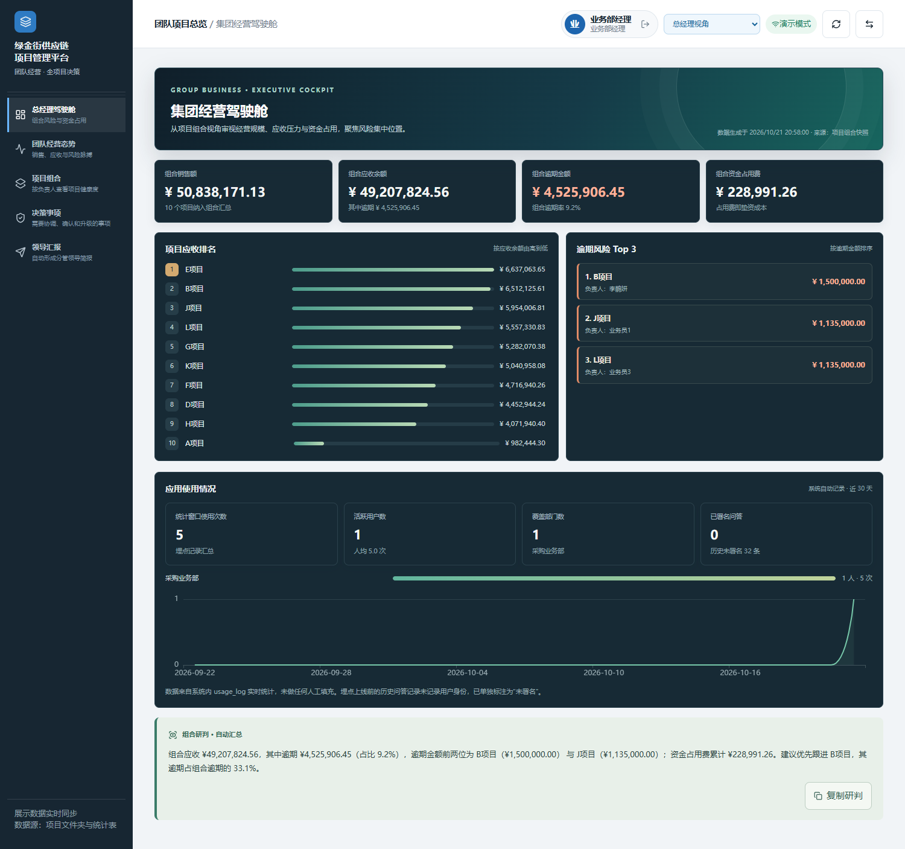
usage_log 实时统计登录、问答与各模块操作。全新环境的数字从零开始，使用人数、部门数和问答数以实际操作为准，不预设、不回填。
每个项目独立资料目录、独立数据空间。A 项目展示可运行的数据处理链路（改动触发重算）；B / D / E / F / G / H / J / K / L 为虚拟演示数据，仅供展示组合视角和情景测算。C 项目刻意不预置，留给现场演示"新增"。
整理一个文件夹 → 三步向导 → 进件体检 → 独立数据空间。实测 61 个文件 / 4.13 MB，约 1 分半以内完成。
业务员看自己项目、经理看项目组合、集团层看组合驾驶舱，同一套数据三种视角，权限按角色收敛。
跨行业复用的边界（诚实说明）：本系统面向的是有合同规则驱动的贸易/供应链中间商场景——钢筋、建材、大宗商品这类"重量 × 网价 + 上下浮"的定价结构最贴合。换成完全不同的计费结构（如按次计费的服务业），角色、流程、看板、台账结构可以直接复用，但规则引擎那一层需要重写。这是"通用业务骨架 + 行业规则插件"的设计取舍。
| 阶段 | 范围 | 要做什么、成本多少 |
|---|---|---|
| 已达成 | 10 个预置项目 · 5 个演示账号 | 五类角色视角已配置；账号数不等于真实活跃用户数，使用统计按实际操作记录 |
| 新增演示 | C 项目导入后 11 个 | 整理资料文件夹并走向导；约 1 分半/项目（C 项目实测） |
| 中期 | 接入 ERP / 财务系统 | 后端已对外提供 46 个 REST 接口，可直接作为数据提供方被调用；也可用上游结构化数据替换"读文件夹"这一段 |
| 规模化 | 新增业务品类 | 复用角色/流程/看板，重写规则引擎的计费规则（这是唯一需要开发的部分） |
这一章给有技术背景的评委。核心结论只有一句：整套系统跑在本机、零框架、零 CDN、断网可用。
亮点零框架、零 CDN、断网可用：前端是单个 HTML 单页，后端是 Python 标准库 HTTP 服务，OCR 用本地离线模型——整机离线也能跑，图像不出本机，这在国企内网环境里是最容易过安全审查的形态。
| 层次 | 实际用的东西 | 说明 |
|---|---|---|
| 前端 | 单个 index.html · 原生 JavaScript · ECharts 图表 · Lucide 图标 |
不用 React / Vue / jQuery 等框架，两个图形库的文件也随程序放在本地 /static/ 目录里。页面里没有任何一行指向外部 CDN 的资源，所以断网照样能打开、样式不错乱、图表照常画。 |
| 后端 | Python 3.12 标准库 http.server（ThreadingHTTPServer）· 单文件 · 46 个 REST 接口 |
不用 Flask / FastAPI / Django 任何 Web 框架，路由就是一个接口表。依赖极少、部署就是"拷一个文件夹 + 双击脚本"，在内网环境里最容易过安全审查。 |
| 状态存储 | SQLite 6 张表（回款记录、知识分块、问答运行记录、逾期提醒、逾期扫描元数据、管理事项）+ 操作使用流水 | 单文件数据库，不需要单独安装数据库服务。系统重启不丢数据，异常与操作都有落表。 |
| 文档解析 | pymupdf / pypdf（PDF 文本层）· rapidocr_onnxruntime（本地离线 OCR）· openpyxl（Excel） |
OCR 用的是本地离线模型，扫描件在这台机器上就地识别，图像本身不出本机。 |
| 语义层 | 云端大模型 / 本机大模型（问题理解、取证规划、异常定性、文字组织）+ 本地规则引擎兜底 | 只有"理解人话、下定性判断"这一步会访问模型。系统内置三级降级：云端大模型（示例 DeepSeek）→ 本机大模型（示例 Ollama）→ 本地规则引擎；前两级都不可用时自动切到规则引擎，并在页面明确标注当前由谁作答。 |
| 并发与控制 | 线程池并行处理 · 会话令牌鉴权（X-Session-Token，8 小时有效）· 角色视图隔离 |
一批几十份文件可以并行识别与核对；登录态与服务端会话绑定，不同角色看到不同数据范围。 |
| 环节 | 由谁负责 | 可验证的证据 |
|---|---|---|
| 读文件、切字段 | 本地程序（PDF 文本层 / OCR） | 页面上每条记录都带文件名与页码 |
| 算金额、日期、天数、费用 | 本地程序（模型不参与） | 同名输入必得同值输出，可复现、可入底稿 |
| 决定下一步去查哪个证据 | 模型（Agent 取证规划） | "取证轨迹"逐行记录每一轮动作与耗时 |
| 给异常下定性结论 | 模型（含 degraded 降级标记） | 页面标签：大模型已参与 / 本地规则引擎已接管 |
| 结论中的数字是否有据 | 反查机制（程序校验） | 数字在证据中查不到 → 结论作废，退回规则判定 |
| 最终对外动作 | 人（审核 / 确认 / 审批） | 核算单需人工确认、催款函需负责人确认后才发送 |
亮点为什么把"降级"做成一个可见的功能，而不是藏起来
很多系统遇到模型不可用就悄悄失败。这套系统反其道而行：把"这次是谁判的"直接显示在页面上。
这样做有两个好处：一是演示与使用时功能不中断，模型不给力也有结论可看；二是口径透明——看结果的人知道这条结论是模型定的还是规则定的，可以据此决定要不要重点复核。把不确定性摆在明处，比假装没有更可信。
| 风险点 | 系统怎么处理 |
|---|---|
| 资料外传 | OCR 与业务计算在本机完成，数据库是本地单文件。若启用云端模型，问题及用于回答的资料片段可能发送给模型服务商；模型是否可用、请求发往何处以运行配置为准。不要向未获授权的云端服务提交真实敏感资料。 |
| 纸质原件 | 按国企单据双归档要求设计：纸质原件用于现场签章、审计与责任追溯；线上影像与结构化字段用于检索、核验与留痕。系统把两套资料绑定到同一订单。效率提升不以牺牲"能查证"为代价。 |
| 对外口径 | 涉及结算与计费的一律收敛表述为"按合同约定的结算与计费规则，自动核算"，不作资金占用结构层面的展开。这是贯穿全部对外材料的口径纪律。 |
| 断网可用 | 整机离线可运行；模型不可用时自动降级为本地规则引擎，功能不中断、口径不变化。 |
| 数据性质（三类） | ① A 项目：展示资料变化、规则计算和下游更新的可运行链路；交付凭证为脱敏重制的合成件。② C 项目：现场新增导入用的演示资料。③ B / D / E / F / G / H / J / K / L：虚拟项目，仅展示组合视角。所有凭证与数据均不代表真实客户、合同或交易。 |
按评审现场最可能被问到的顺序排列。每条给出一句话版（面向非技术评委）与深入版（面向技术评委）。
| 问题 | 一句话版 | 深入版 |
|---|---|---|
| 这不是"套壳大模型"吧？ | 不是。业务金额与日期由程序计算，模型用于自然语言理解、检索辅助和文字组织。 | 这是规则与模型协作的混合设计：页面可查看工具/证据轨迹及模型降级状态；核查结果可打开原件，数字仍以规则计算为准。它不是把财务计算交给模型。 |
| 截图上的数字是真的吗？ | 是真的，都是系统实际跑出来的，可以按日期和文件名逐一核对原件。 | 本文数字来自 A 项目实际运行：核查范围 2026-07-01 ~ 2026-08-31，扫到 48 份业务原件、7 个业务日期，评分 86 / 80 / 100，抓出 1 处缺件（07-17 缺上游送货单）+ 1 处金额冲突（07-25 差 2,000.00 元）。每一项都可点「查看原件」回到 PDF 复核。 |
| 那 2,000 元是怎么发现的？ | 系统把发票、对账单、台账的数字摆在一起比，发现对不上。 | 三源交叉核验：单看一张发票，票面自洽；只有与台账应结金额并排比对才会暴露差异。我们复核了原件——该发票明细逐行相加的"合计"为 ¥304,637.68，而票面"价税合计（小写）"为 ¥302,637.68，同一张票上两个汇总数自差 2,000 元。系统保留票面全部候选值逐一比对，因此能识别"票面被改写"，而不只是"数字读不出来"。 |
| 问题 | 一句话版 | 深入版 |
|---|---|---|
| OCR 会不会认错字？认错了怎么办？ | 会。所以系统把识别结果摆给人看，而不是直接拿去付款。 | 三层应对：①三级降级读取（PDF 文本层 → 全文抽取 → 逐页 OCR），能走文本层就不走 OCR；②识别结果在台账中可人工校正并重新计算；③每条异常都带文件名与页码，可一键翻回原件核对。系统定位是"全量初筛"，不是"无人签批"。 |
| 能保证 100% 准确吗？ | 不承诺 100%，但我们把"人工抽查"变成了"全量过一遍"。 | 准确性口径的变化是实质性的：过去受工时限制只能抽检，现在范围内每一份原件都参与核验，且异常不靠人眼记忆，而是落成带出处的清单。风险从"可能漏看"变成"漏看会留痕"——这才是可以审计的状态。 |
| 合同规则变了，系统会不会算错？ | 规则是跟着合同走的，改合同就改规则，算出来的数跟着变。 | 计息起付条件、结算周期、上下浮比例、抵扣顺序都以合同为准，系统按合同约定顺序抵扣、按时间段分段计息，并输出核算明细供复核。规则可追溯、结果可复现，不依赖某个人的算法习惯。 |
| 模型乱说怎么办？ | 它乱说也没用——数字对不上证据，系统直接作废这条结论。 | 这是架构层面的约束：金额、日期、出处一律由程序提供，模型不接触原始计算；模型只做定性与规划，且结论需通过反查校验。校验不通过即 degraded，退回规则引擎。"不许猜数字"是硬约束，不是提示词。 |
| 问题 | 一句话版 | 深入版 |
|---|---|---|
| 换一台电脑能用吗？要装什么？ | 能。整个交付包拷过去，双击启动脚本就行。 | 交付包自带启动脚本，浏览器打开即可使用。零依赖外部服务（无数据库服务、无 CDN、无框架安装）；如需让同事访问，把监听地址改为对内开放即可局域网使用。 |
| 接入一个新项目要多久？ | 整理好一个文件夹，走三步向导，一分多钟。 | 「新增项目」向导三步完成：填项目基础信息 → 选择项目资料文件夹 → 系统进件体检并智能初始化。实测一个 61 个文件 / 4.13 MB 的资料目录，初始化约 1 分半以内完成，随后自动生成该项目的独立数据空间。加项目不改代码、不搬数据。 |
| 能和现有 ERP / 财务系统对接吗？ | 能。系统本身是标准接口，可以把这个位置接到别的系统上。 | 后端对外是 46 个 REST 接口（台账、核算、逾期、看板、资料导入、报表下载等），可直接作为数据提供方被其他系统调用；同样，若上游系统能提供结构化数据，也可替换掉"读文件夹"这一段。当前版本定位为独立部署，接口已留好。 |
| 用来替代人工吗？ | 替代重复劳动，不替代判断。最终确认和对外动作都还需要人。 | 系统承担的是"翻文件、抄数字、套规则、做表格、组织材料"这些机械环节；审核核算结果、确认资金占用费、审批催款函、处置待办事项仍由人完成。这样既守住了国企对内控与授权的要求，也让人的精力从抄录转向判断。 |
| 现在到底几个人在用？ | 系统配置 5 个演示账号；活跃人数依现场使用记录，不作预置承诺。 | 系统配置 5 个演示账号，面板逐条统计已发生的操作。账号数不等于实际用户数；全新环境由零开始，不预置或回填活跃人数和使用次数。当前为演示环境，不是全公司推广规模；推广路径见 7.3。 |
把全篇 ★ 标记 的地方集中成一页，供快速翻阅与答辩检索。
| 序 | 亮点 | 位置 | 一句话说清它"屌"在哪 | 重量级 |
|---|---|---|---|---|
| 1 | 最少的一手数据 + 全链推导 | 第五章 | 人只提供重量、网价、回款、合同规则；单价、金额、毛利、税费、周期、起息日、天数、费用、逾期、欠款、汇报数字全部由规则引擎算出并被下游复用。改一个源头，整条链自动重算。 | ★★★★★ |
| 2 | 同一个数字复用七处 | 5.2 | 逾期本金 135,906.45 元只在周期处算出一次，随后被结算看板、逾期提醒、风险卡、问答、经理台各自取用，无一处人工重填。 | ★★★★★ |
| 3 | 规则清单可逐条对照 | 5.3 | 算价、三税、周期、起息日、逾期分档、占用费分段——六类规则全部写死成可执行、可核对的确定性公式，不留在人的经验里。 | ★★★★★ |
| 4 | 2,000 元差异是"算出来"的 | 4.1 | 把发票、对账单、台账三方数字摆在一起交叉核验；单看一张票是自洽的，只有并排比对才会暴露被改写的票面。 | ★★★★★ |
| 5 | 金额绝不允许模型算（反查机制） | 3.2 | AI 只做「措辞与分级判断」，所有数字由可复算的本地公式产生；模型每一句结论都附证据出处，结论里的每个数字必须在证据里找得到，找不到就作废退回规则。目的是在演示现场就能证明结果可复核。 | ★★★★★ |
| 6 | 资金占用费分段可复算 | 4.4 | 回单 OCR 取数 → 固定抵扣顺序 → 回款日不计息 → 部分回款拆两段 → 未冲抵结转；每段起止日、本金、天数、费用逐行可查。 | ★★★★★ |
| 7 | 三样东西绑在同一订单 | 3.3 | 纸质原件（法律效力）+ 线上影像 + 结构化字段绑定到同一笔业务，效率提升不以牺牲"能查证"为代价。 | ★★★★ |
| 8 | 结论能一路翻到合同原件 | 3.3 | 不只是算出来的数能翻回原件，连算价与计息所依据的那份合同本身也能翻回原件——证据链闭合到规则层。 | ★★★★ |
| 9 | 凭证可回溯 | 4.2 | 台账每一行都能一键翻回那张送货单和网价本身。答辩时可以直接打开原件：能点开原件给审计看的数字，才叫数据。 | ★★★★ |
| 10 | 未逾期就不动作 | 4.5 | 系统在条件判断处主动停下：未到起息日只监控、不生成催办；真实逾期才推进分档。既不漏催，也不误催。 | ★★★★ |
| 11 | 确定性优先，模型兜底 | 3.4 | 规则能判的毫秒级判，规则判不了的才叫模型；模型不可用自动退回规则并在页面标注，功能不中断。 | ★★★★ |
| 12 | 把"降级"做成可见功能 | 8.2 | 页面直接显示这次是"大模型已参与"还是"本地规则引擎已接管"。把不确定性摆在明处，比假装没有更可信。 | ★★★★ |
| 13 | 零框架 · 零 CDN · 断网可用 | 8.1 | 单文件前端 + Python 标准库后端 + 本地离线 OCR。整机离线能跑、图像不出本机，内网易过审。 | ★★★★ |
| 14 | 模型与规则分工清晰 | 3.1 | 语义理解与文字组织使用模型辅助；台账、费用和逾期金额由确定性规则计算，重要结果可回到资料核验。 | ★★★★ |
| 15 | 使用情况有真实留痕 | 7.1 | 使用面板基于真实操作记录实时统计，账号配置与活跃用户严格区分；现场可验证操作留痕。 | ★★★★ |
| 16 | 价值测算可逐项复算 | 6.3 | 投入产出表每个数字都给出计算式和假设来源，参数可现场替换重算；并诚实给出"扩到 10 项目到 50 万档"的杠杆。 | ★★★★ |
| 17 | 加项目不改代码 · 汇报稿随决策更新 · 口径摊开 · 卡片是"活的" | 4.7 / 4.8 / 4.3 / 4.9 | 四个配套设计：加项目零开发（1 分半接入）、汇报稿随决策自动更新、每个指标旁写明计算式与来源列、价值卡片随口径同步改写。单看每一处都不惊艳，合起来是"这套系统能被长期维护"的证据。 | ★★★ |
附上本说明引用到的原始凭证。所有界面截图里的数字，都能在下面这些凭证上找到对应。
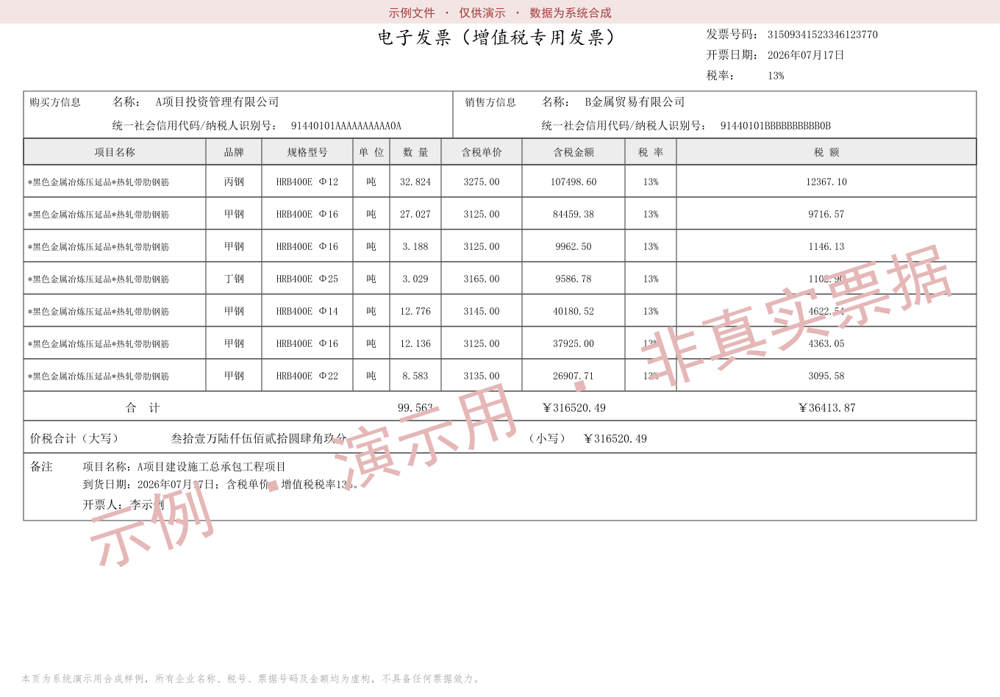
| 图 | 凭证 | 它证明什么 | 在系统里的位置 |
|---|---|---|---|
| 图 3 | 下游发票（2026-07-25） | 票面"合计"¥304,637.68 与"价税合计（小写）"¥302,637.68 自差 2,000.00 元，即系统标记的金额冲突 | 单据完整性核查 · 07-25 明细行「查看原件」 |
| 图 5 | 送货单 | 过磅重量与车号，销售单价与金额的计算基数 | 业务台账 · 对应明细行「查看凭证」 |
| 图 6 | 网价资料 | 当期市场价，按合同上下浮比例换算单价的价格基准 | 业务台账 · 对应明细行「查看凭证」 |
| 图 10 | 回款回单 | 回款日期与金额，资金占用费抵扣顺序与分段计息的起算依据 | 资金占用费核算 · 回款日志对应笔次 |
| 图 19 | 合同（封面页） | 合同编号、项目名称、甲乙双方、签订时间——台账算价与资金占用费核算所依据的那份合同本身 | 台账算价 / 资金占用费核算的规则来源 |
| 图 20 | 上游发票 | 采购端金额，与销售端共同构成完整核验闭环 | 单据完整性核查 · 资料匹配范围 |
同一个输入，换时间、换操作人，算出来的数完全一致——因为计算由程序执行，不依赖人或模型的"手感"。
每一个引用的数字，都带着文件名与页码。不必"再找一遍资料"，直接跳到出处。
从字段再往前一步，能打开被扫描的那张原件——发票、送货单、网价、回单、合同，都留在系统里。
系统给出结论与依据，是否采纳、是否付款、是否发函，由人决定，且决定过程留痕。
如果只记三件事
① 数据只维护一次。人只给一手事实，其余数字全部由公式规则引擎算出，并被下游层层复用——一处算，处处一致。
② 机器算数，模型辅助，人做决定。金额由可复算的本地规则产生；模型用于语义理解、检索辅助和文字组织，重要结论可对照证据复核。
③ 每个结论都能翻回原件。从结论 → 字段 → 原件 → 规则所依据的合同，一路可查。快只是结果，可复现、可追溯、可审计才是它走进国企业务的理由。